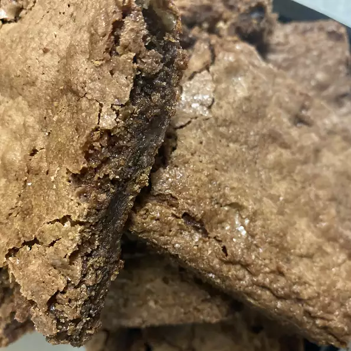

Fudge Brownies Recipe

Description:
Recipe for delicious fudge brownies.
Ingredients:
- 1 cup butter
- 4 (1 ounce) squares unsweetened chocolate
- 2 cups white sugar
- 4 eggs
- 1 cup all-purpose flour
- 1 teaspoon vanilla extract
- 1/2 teaspoon salt
- 2 cups chopped walnuts
Steps:
- Preheat the oven to 350 degrees F (175 degrees C). Grease a
9x13-inch baking pan.
- In a 3-quart saucepan over very low heat, melt butter and
chocolate, stirring the mixture constantly. Remove from heat,
and stir sugar into the chocolate. Allow the mixture to cool
slightly. Beat in eggs one at a time, mixing well after each,
then stir in vanilla. Combine flour and salt; stir into the
chocolate mixture. Fold in walnuts. Spread the batter evenly
into the prepared pan.
- Bake in the preheated oven, 30 to 35 minutes. Brownies are done
when a toothpick inserted into the center comes out clean. Cool
in the pan on a wire rack.